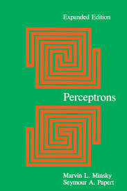
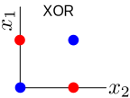
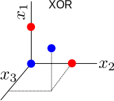
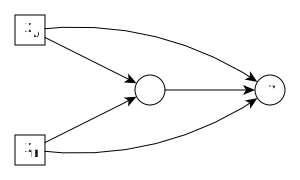
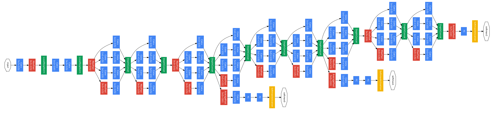
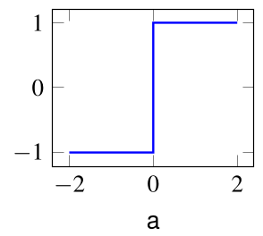
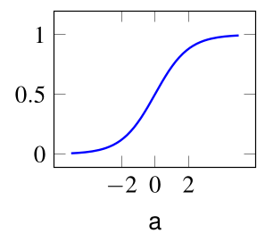
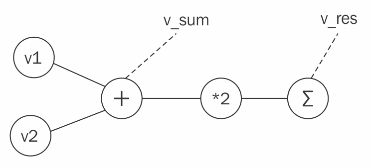

<h1> Neural Networks <br/> and <br/> Machine Learning </h1> ### Week 2 ### Instructor: Prof. Emre Neftci <center>https://canvas.eee.uci.edu/courses/21750</center> [](?print-pdf)
# Artificial Neural Networks (ANNs)
## Linear separability A perceptron is equivalent to a decision boundary. - A straight line can separate blue vs. red <img src=img/perceptron_rain_hyperplane.png class="small"> - There is no straight line that can separate blue vs. red <!-- .element: class="fragment" --> <img src=img/perceptron_xor_hyperplane.png class="small"> <p class="pl">Problems where a straight line can separate two classes are called <em>Linearly Separable</em></p>
## Limitations of Perceptrons The limitation of a Perceptron to linearly separable problems caused its downfall:  <p class=ref> Minsky and Papert, 1969 </p>
## XOR can be solved with an intermediate perceptron <div class=row> <div class=column>  </div> <div class=column>  </div> </div> - We need an intermediate unit that is on only when $x_1$ and $x_2$ are both on.
## A Neural Network Solving XOR - Find the parameters in the following network: <div class=row> <div class=column>  </div> <div class=column> <table> <tbody><tr bgcolor="#ddeeff" align="center"> <td colspan="2"><b>INPUT</b></td> <td><b>Y</b> </td></tr> <tr bgcolor="#ddeeff" align="center"> <td>A</td> <td>B</td> <td>A XOR B </td></tr> <tr bgcolor="#ddffdd" align="center"> <td>0</td> <td>0</td> <td>0 </td></tr> <tr bgcolor="#ddffdd" align="center"> <td>0</td> <td>1</td> <td>1 </td></tr> <tr bgcolor="#ddffdd" align="center"> <td>1</td> <td>0</td> <td>1 </td></tr> <tr bgcolor="#ddffdd" align="center"> <td>1</td> <td>1</td> <td>0 </td></tr></tbody> </table> </div> <div class=fragment><p class=pl> The strategy of automatically extending networks with intermediate units is the main idea of representation learning </p></div>
## Neural Network - We can connect Perceptrons together to form a multi-layered network. <img src=img/mlp.png /> <ul> <li/> If a neuron produces an input, it is called an <em>input neuron</em> <li/> If a neuron's output is used as a prediction, we will call it an <em>output neuron</em> <li/> If a neuron is neither and input or an output neuron, it is a <em>hidden neuron</em> </ul> - Increased level of abstraction from layer to layer - Also called Multilayer Perceptrons (although units are not always Perceptrons)
## Multiple Linear Layers are Equivalent to one Single Layer <ul> <li/> A linear transformation is of the type: $$ \mathbf{y} = W \mathbf{x} $$ <li/> Linear networks are mathematically tractable, so why not build multilayer linear networks? $$ \mathbf{y}^{(2)} = {W}^{(2)} ({W}^{(1)} \mathbf{x}^{(1)} ) $$ <li class=fragment /> Such a network is equivalent to a wide single layer network $$ \begin{split} \mathbf{y}^{(2)} &= V \mathbf{x}^{(1)} \\ V &= W^{(2)} W^{(1)} \end{split} $$ <li class=fragment /> Non-linearities preserve the composition of layers, and thus have more representational power $$ \begin{split} \mathbf{y}^{(2)} &= \sigma(W^{(2)}\sigma(W^{(1)}\mathbf{x}^{(1)} ) ) \end{split} $$ </ul>
## Deep neural networks - Before: <blockquote> How many hidden layers and how many units per layer do we need? The answer is at most two </blockquote> <p class=ref> Hertz, <em>et al.</em> 1991</p> - Now: <blockquote>  </blockquote> <p class=ref> Szegedy <em>et al.</em> 2014 </p> <p class=pl> Deeper networks tend to have more representational power </p>
## Credit Assignment Problem Multilayer (deep) networks are more powerful: how can one train multilayer networks? <img src=img/mlp_gradient.png /> Two problems: - Perceptrons' discontinuity - Credit assignment: which hidden unit weight should we modify to reach a target output?
## Continuous Output Neurons (Sigmoid Neuron) Neurons in deep neural networks are similar to Perceptrons, but with a continuous activation function <div class="row"> <div class="column"> Threshold unit (Perceptron) $$ y = \Theta(a) = \begin{cases} -1 & \mbox{if } a \leq 0 \\\\ 1 & \mbox{if } a > 0 \end{cases} $$ </div> <div class="column"> Sigmoid unit $$ y = \sigma(\text{a}) = \frac{1}{1+e^{-a}} $$ </div> </div> <div class="row"> <div class="column">  </div> <div class="column">  </div> </div> $$ a = \sum_j w_j x_j + b $$ - A function is continuous if the curve can be drawn "without lifting the pen"
## Single Layer Network with Sigmoid Units - Weight matrix: $W^{(1)} \in \mathbb{R}^{N\times M}$ (meaning $M$ inputs, $N$ outputs) `$$ \begin{eqnarray} y^{(1)}_i &=& \sigma(\underbrace{\sum_j W^{(1)}_{ij} x_j}_{a_i^{(1)}}) \\ \end{eqnarray} $$` - MSE cost function, assuming a single data sample $\mathbf{x}\in\mathbb{R}^{M} $, and target vector $\mathbf{t}\in\mathbb{R}^{N}$ `$$ C_{MSE} = \frac12 \sum_i(y^{(1)}_i - t_i)^2 $$` - Gradient w.r.t. $W^{(1)}$ (in scalar form): `$$ \frac{\partial }{\partial W^{(1)}_{ij}} C_\text{MSE}= (y^{(1)}_i - t_i) \sigma'(a^{(1)}_i) x_j $$`
## Single Layer Network with Sigmoid Units <ul> <li /> Neural networks operations are generally written in Matrix form <div class=row> <div class=column> <center>Scalar Form</center> $$ \begin{split} a_i^{(1)} &= \sum_j W^{(1)}_{ij} x_j, \quad y^{(1)}_i = \sigma(a_i^{(1)}) \\ \delta_i^{(1)} &= (y^{(1)}_i - t_i) \sigma'(a^{(1)}_i)\\ \Delta W_{ij} &= -\delta_i x_j \end{split} $$ </div> <div class=column> <center>Matrix Form</center> <div class=fragment> $$ \begin{split} A^{(1)} & = W^{(1)} X, \quad Y^{(1)} = \sigma(A^{(1)}) \\ \end{split} $$ </div> <div class=fragment> $$ \begin{split} \delta &= (Y^{(1)} - T) \odot \sigma'(A^{(1)}) \\ \end{split} $$ </div> <div class=fragment> $$ \begin{split} \Delta W & \propto - \frac{\partial }{\partial W^{(1)}} C_\text{MSE} = - \delta \mathbf{X}^\top \\ \end{split} $$ </div> </div> </div> $$ W \leftarrow W + \Delta W $$ <ul class=fragment> <li /> Dimensions of $\delta$ are $N, N_{train}$ <li /> Dimensions of $X$ are $M, N_{train}$ <li /> Dimensions of $\Delta W$ must be same as $W$ </ul> [](https://drive.google.com/open?id=1Ko5Sjb-znbpxfNVDJXwOyj0vrKoAJgtU)
## Two Layer Network with Sigmoid Units - Two layers means we have two weight vectors $W^{(1)}$ and $W^{(2)}$ - $W^{(1)} \in \mathbb{R}^{N^{(1)}\times M}$, $W^{(2)} \in \mathbb{R}^{N^{(2)}\times N^{(1)}}$ - The output is a composition of two functions: $$ \begin{eqnarray} \mathbf{y}^{(1)} &=& \sigma(W^{(1)} \mathbf{x} ) \\\\ \mathbf{y}^{(2)} &=& \sigma(W^{(2)} \mathbf{y}^{(1)} ) \\\\ \end{eqnarray} $$ <ul> <li class=fragment /> Cost function $ C_{MSE} = \frac12 \sum_{i=1}^{N^{(2)}}(y^{(2)}_i - t_i)^2 $ <li class=fragment /> Gradient wrt $W^{(2)}$ is: $ \frac{\partial }{\partial W^{(2)}_{ij}} C_\text{MSE}= (y^{(2)}_i - t_i) \sigma'(a^{(2)}_i) y^{(1)}_j $ <li class=fragment /> Gradient wrt $W^{(1)}$ is: $ \frac{\partial}{\partial { W_{jk}^{(1)}}} C_{\text{MSE}} = (\sum_i ( y_i^{(2)}- t_i) \sigma'(a^{(2)}_i) W^{(2)}_{ij}) \sigma'(a^{(1)}_j) x_k $ <li class=fragment /> This is a special case of the gradient backpropagation algorithm </ul>
## The Gradient Back-Propagation Algorithm  1. Forward-propagate to compute $y^{(k)}$ for all layers $k$ 2. Compute loss and error 3. Back-propagate error through network, *i.e* compute all $\mathbf{\delta}^{(k)}$
## The Gradient BP algorithm (for your reference) <div style='font-size:24px;text-align:left;' > <p>The task of learning is to minimize a cost function $\mathcal{L}$ over the entire dataset. In a neural network, this can be achieved by gradient descent, which modifies the network parameters $\mathbf{W}$ in the direction opposite to the gradient: $$ \begin{split} W_{ij} \leftarrow W_{ij} - \eta \Delta W_{ij}, & \text{where } \Delta W_{ij} = \Dp{\mathcal{L}}{W_{ij}} = \Dp{\mathcal{L}}{y_i} \Dp{y_i}{ a_i } \Dp{a_i}{W_{ij}} \end{split} $$ with $a_i = \sum_j W_{ij} x_j$ the total input to the neuron, $y_i$ is the output of neuron $i$, and $\eta$ a small learning rate. The first term is the error of neuron $i$ and the second term reflects the sensitivity of the neuron output to changes in the parameter. In multilayer networks, gradient descent is expressed as the \gls{bp} of the errors starting from the prediction (output) layer to the inputs. Using superscripts $l=0,...,L$ to denote the layer ($0$ is input, $L$ is output): `$$ \frac{\mathrm{\partial}}{\mathrm{\partial} W^{(l)}_{ij}} \mathcal{L} = \delta_{i}^{(l)} y^{(l-1)}_j,\text{ where }\delta_{i}^{(l)} = \sigma'\left( a_i^{(l)} \right) \sum_k \delta_{k}^{(l+1)} W_{ik}^{\top,(l)}, $$` where $\sigma'$ is the derivative of the activation function, and $\delta_{i}^{(L)}=\Dp{\mathcal{L}}{y_i^{(L)}}$ is the error of output neuron $i$ and $y_{i}^{(0)}=x_i$ and $\top$ indicates the transpose. Learning is typically carried out in forward passes (evaluation of the neural network activities) and backward passes (evaluation of $\delta$s). </p> </div>
## The Gradient Back-Propagation Algorithm: In-class Game
<iframe data-src="http://playground.tensorflow.org/" style='max-height:600px;height:600px;width:100%;translate: scale(.1)'></iframe>
## Neural Networks with PyTorch - PyTorch is a machine learning framework that facilitates the implementation of Deep Learning - Other tools such as Tensorflow or Theano have a similar purpose, but PyTorch is more versatile and easier to use. - To use pytorch, remember to import it: <pre><code class="Python" data-trim data-noescape> import torch </code></pre> - Follow-along notebook [](https://drive.google.com/open?id=1botgh24In3QFyMc9AmezPszgt2ntJ-OL)
## Tensor - The tensor is the basic building block of Pytorch (and many other tools likes tensorflow)  - A tensor is a multi-dimensional array > For example, a color image could be encoded as a 3D tensor with dimensions of width, height, and color plane. - Apart from dimensions, a tensor is characterized by the type of its elements (integer, float, double, byte, boolean etc.).
## Tensor Creation - Tensors can be created like numpy arrays - Numpy <pre><code class="Python" data-trim data-noescape> a = torch.FloatTensor(size=[3,2]) #3 and 2 are dimensions a.zero_() #initializes are values to zero </code></pre> - pyTorch <pre><code class="Python" data-trim data-noescape> b = torch.FloatTensor([[1,2,3],[3,2,1]]) </code></pre>
## Tensor Creation - Tensors can also be converted from a numpy array <pre><code class="Python" data-trim data-noescape> n = np.zeros(shape=(3, 2)) c= torch.tensor(n) </code></pre>
## Tensor Operations There are many operations that can be performed on tensors. See http://pytorch.org/docs/. Some examples below - Addition <pre><code class="Python" data-trim data-noescape> b + b </code></pre> - Multiplication <pre><code class="Python" data-trim data-noescape> b*b </code></pre>
## Tensor Operations (continued) There are many operations that can be performed on tensors. See http://pytorch.org/docs/. Some examples below - Transpose <pre><code class="Python" data-trim data-noescape> b.transpose(0,1) #flips axes 0 and 1 </code></pre> - Matrix multiplication <pre><code class="Python" data-trim data-noescape> torch.mm(b,b.transpose(0,1)) </code></pre>
## Graph Representation of an Expression Pytorch and other frameworks represent a function using a graph  <pre><code class="Python" data-trim data-noescape> v1 = torch.tensor([1.0, 1.0], requires_grad=True) v2 = torch.tensor([2.0, 2.0]) v_sum = v1 + v2 v_res = (v_sum*2).sum() </code></pre>
## Automatic Differentiation - A key feature of machine learning frameworks is automatic differentiation - With automatic differentation, the gradients are computed automatically across a set of operations - Once a backward operation is called on a node, the gradients of all **leaf** nodes and parameters in the expression are numerically computed <pre><code class="Python" data-trim data-noescape> v_res.backward() #this command computes the gradient v1.grad </code></pre> - The gradient of v2 is None because we did not enable requires_grad <pre><code class="Python" data-trim data-noescape> v2.grad </code></pre> <pre><code class="Python" data-trim data-noescape> v2.requires_grad </code></pre>
## GPUs and Tensors - By default, tensors are stored in the CPU <pre><code class="Python" data-trim data-noescape> b.device </code></pre> - GPUs can be >100x faster on certain operations compared to CPUs - Tensors can be moved to the GPU using the cuda() function <pre><code class="Python" data-trim data-noescape> b_cuda = b.cuda(); b_cuda = b.to('cuda') #Both have the same effect </code></pre> - If you get a runtime error, it means you didn't request for a gpu. go to Runtime> Change Runtime Type>Hardware accelerator and choose GPU, then SAVE <img src=img/colab_runtime_cuda.png class=small /> - All operations must occur on the same device. E.g. you cannot add a cuda tensor to a cpu tensor.
## Neural Network Building Blocks: Modules Up to now, nothing was specific for neural networks: - Machine learning frameworks can be used for all types of computations PyTorch has predefined modules for constructing neural networks - All neural network building blocks are PyTorch modules <pre><code class="Python" data-trim data-noescape> torch.nn.Module </code></pre> - Modules are containers for functions, tensors and parameters - Modules can be called like functions. (but to call them, you need to implement the forward function) <pre><code class="Python" data-trim data-noescape> my_module = torch.nn.Module() my_module() #returns NotImplementedError my_module.forward() #same as above </code></pre>
## Example: the linear module - nn.Linear is a class that implements a module - For example the nn.Linear module defines the linear transformation $$y = Wx + b$$ <pre><code class="Python" data-trim data-noescape> lin = torch.nn.Linear(in_features = 2, out_features = 5) x = torch.FloatTensor([1, 2]) y = lin(x) </code></pre> - The .parameters() function returns all parameters of the module
## Fully-connected Feedforward Networks (MLP) <img src="img/mlp.png" id="fwimg" style="height:200px"/> - Consists of fuly connected (dense) layer. - Implements the function: $$ \mathbf{y} = \sigma \left( W \mathbf{x} + \mathbf{b}\right) $$ - $W$ are trainable weights - $\mathbf{b}$ are trainable biases - $\sigma$ is an activation function <pre><code class="Python" data-trim data-noescape> a = torch.nn.Linear(in_channels=10, out_channels=5) y = torch.sigmoid(a) </code></pre>
## Activation Functions <div class=row > <div class=column > Sigmoid $ \sigma(z) = \frac{1} {1 + e^{-z}} $ <img src=img/sigmoid.png class=small /> <pre><code class="Python" data-trim data-noescape> torch.sigmoid </code></pre> </div> <div class=column > Rectified Linear $ y = [a]^+ = \begin{split}Relu(a) = \begin{matrix} a & a > 0 \\ 0 & a <= 0 \end{matrix}\end{split} $ <img src=img/relu.png class=small /> <pre><code class="Python" data-trim data-noescape> torch.relu </code></pre> </div> </div> <div class=row> <div class=column > Tanh $ tanh(z) = \frac{e^{z} - e^{-z}}{e^{z} + e^{-z}} $ <img src=img/tanh.png class=small /> <pre><code class="Python" data-trim data-noescape> torch.sigmoid </code></pre> </div> <div class=column > Step $ \begin{split}\Theta(z) = \begin{matrix} 1 & z>0 \\ 0 & z<0 \end{matrix}\end{split} $ <img src=img/step.png class=small /> <pre><code class="Python" data-trim data-noescape> torch.sign </code></pre> </div> </div>
## Activation Functions as Modules Activation functions can also be called as modules: <div class=row > <div class=column > Sigmoid <pre><code class="Python" data-trim data-noescape> torch.nn.Sigmoid </code></pre> </div> <div class=column > Rectified Linear <pre><code class="Python" data-trim data-noescape> torch.nn.ReLU </code></pre> </div> </div> <div class=row> <div class=column > Tanh <pre><code class="Python" data-trim data-noescape> torch.nn.Sigmoid </code></pre> </div> <div class=column > No built-in module for Step (but we will build our own when necessary) </div> </div>
## PyTorch Neural Network Bulding Block: Module Modules can be composed to build a neural network. The simplest method is the "sequential" mode that chains the operations <pre><code class="py" data-trim data-noescape> my_first_nn = torch.nn.Sequential(torch.nn.Linear(2, 5), torch.nn.Sigmoid(), #this is an activation function torch.nn.Linear(5, 20), torch.nn.Sigmoid(), torch.nn.Linear(20, 2)) </code></pre> Sequential returns a module, so it can be called as a function <pre><code class="py" data-trim data-noescape> my_first_nn(x) </code></pre> - Note that output dimensions of layer l-1 must match input dimensions of current layer l!
## Week 2 Summary We have seen how to - construct tensors - take their gradients - build modules - call modules - build fully connected networks Two more ingredients are necessary for *training neural networks*: - A loss function - An optimizer